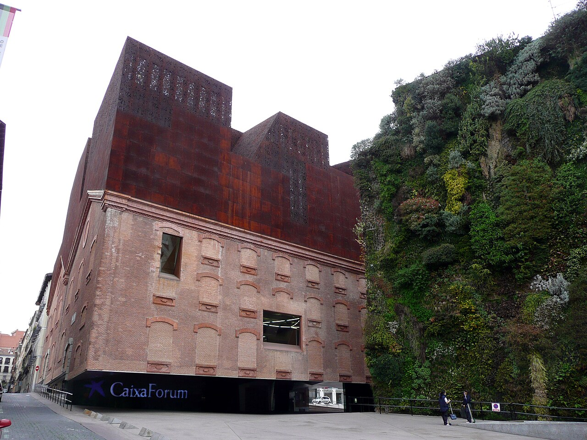
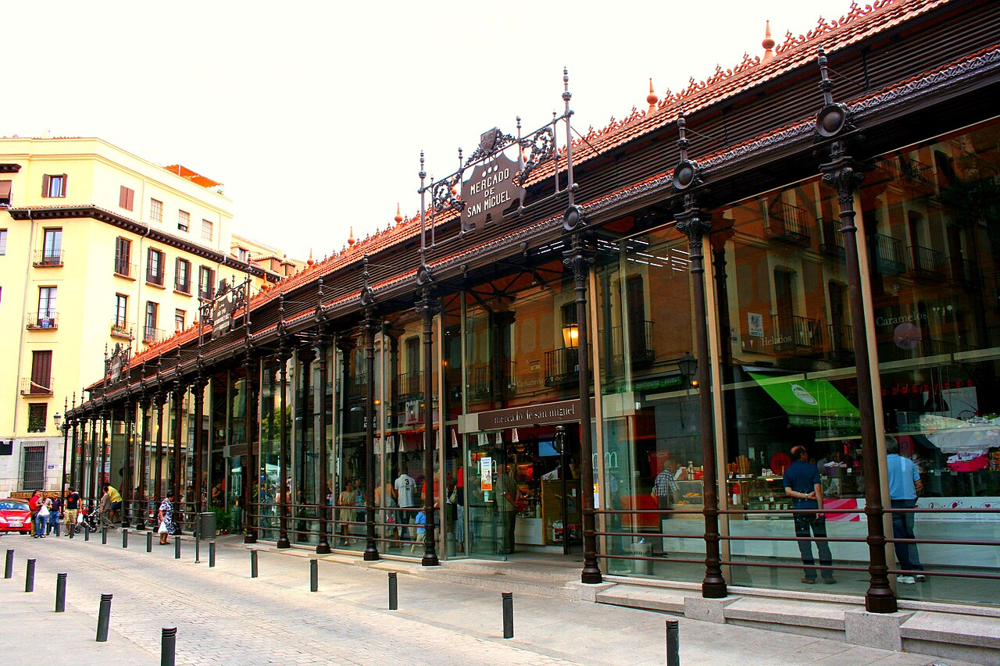
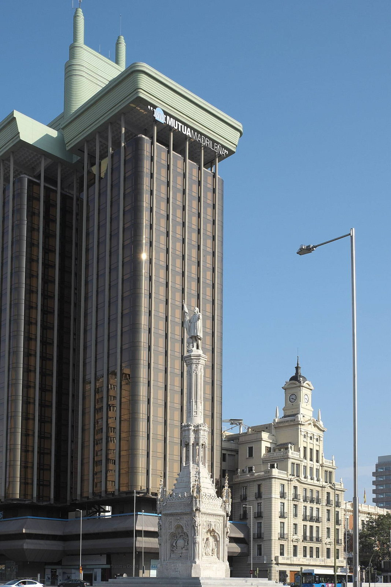
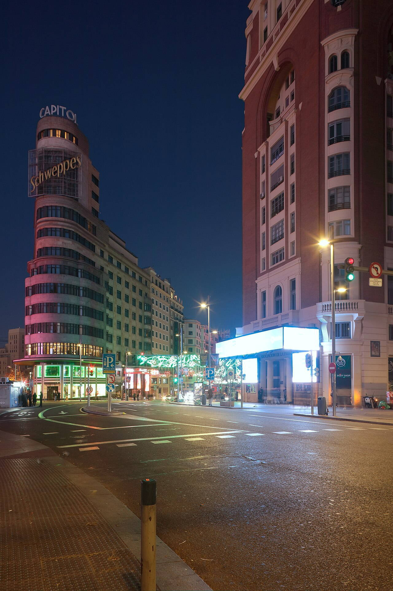
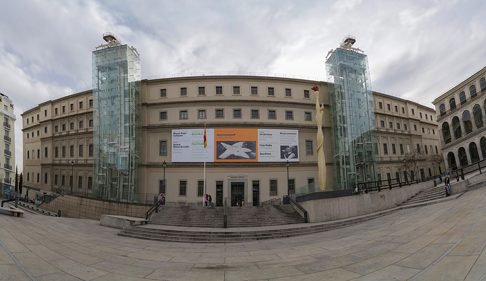
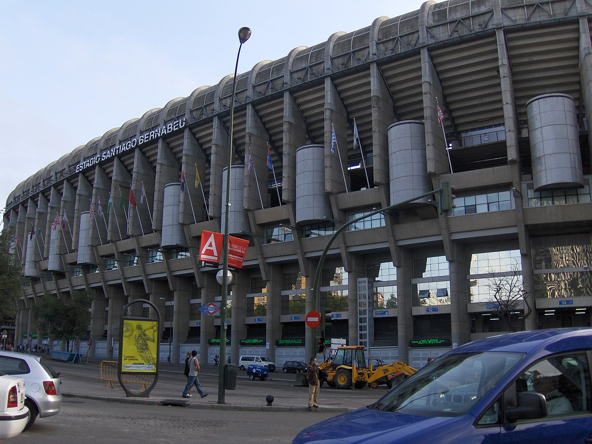
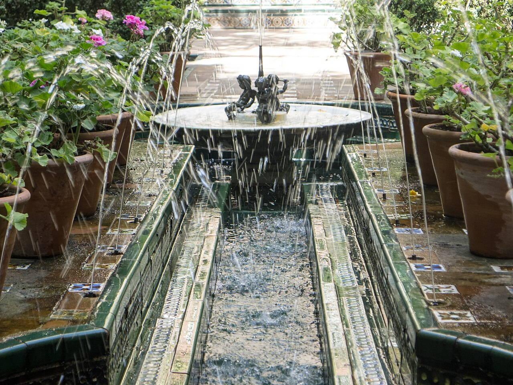
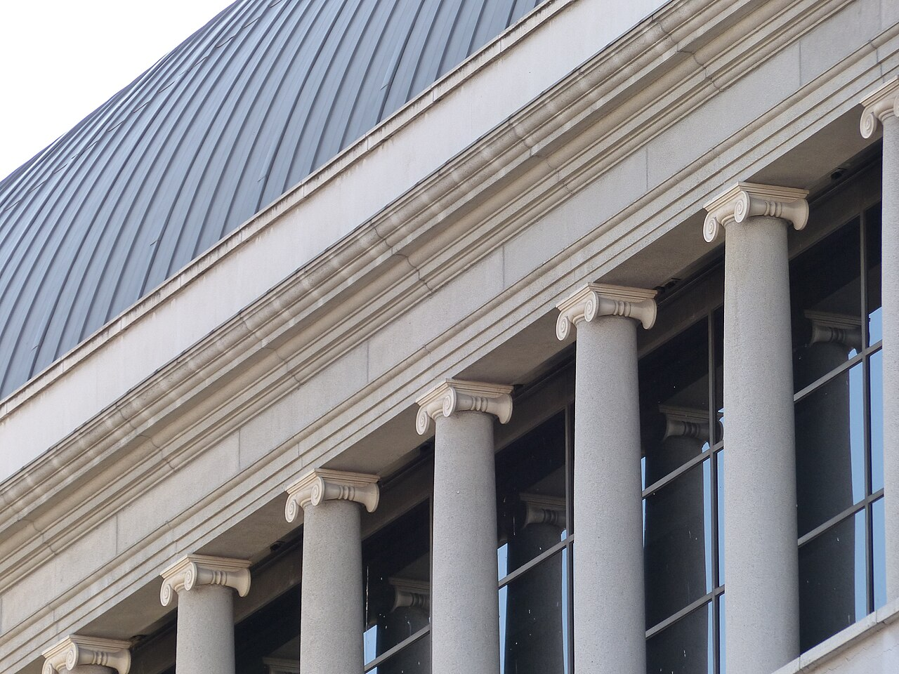
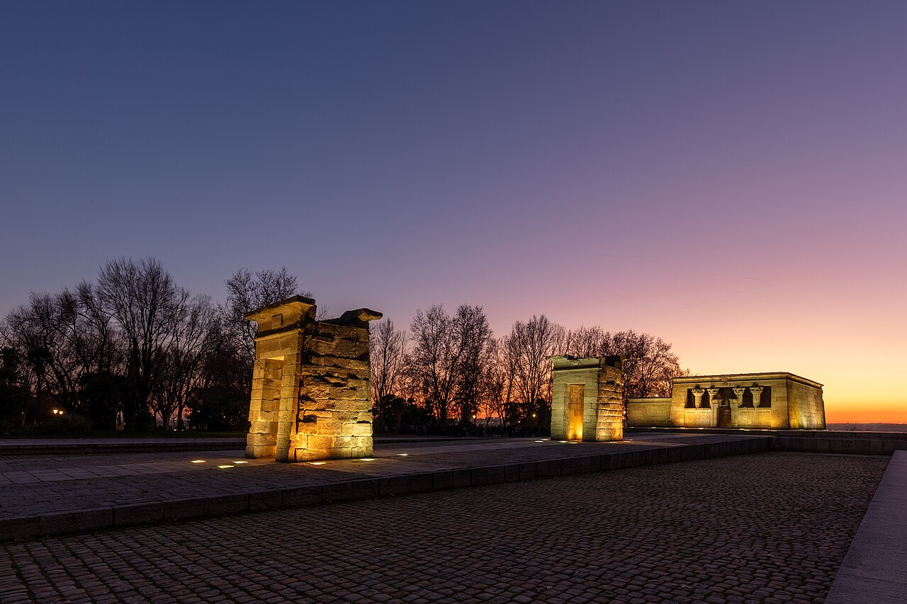

OTIUM is the practice of deliberate leisure. In the classical sense, otium is not escape from work but time when attention returns to memory, landscape, and thought — without a utilitarian deadline.
We shape routes for lingering, not for checklist tourism. The goal is presence in a place rather than consumption of sights.
OTIUM is not a tour operator. It is an invitation to walk, pause, and leave a route unfinished if the light on a façade deserves another minute.
Historical and reference coats of arms
Madrid
Guide. Places in this edition: 33.
Trip ideas
One day
A compact loop linking the strongest cards in this guide, ordered to minimise backtracking on foot.
Perched on the Cuesta de San Vicente, Almudena Cathedral is Madrid's most prominent religious structure and a blend of Gothic Revival and Neo-Romanesque styles. Its construction began in 1874 and was completed in 1993. Modern neo-Romanesque and neo-Gothic cathedral consecrated in 1993 after a long hiatus. Construction commenced in 1874 and concluded in 1993 after extensive delays. The cathedral houses the royal tombs of King Alfonso XII and Queen María Cristina. It features a central dome and four smaller domes symbolizing the four evangelists. Its facade incorporates both Gothic and Romanesque architectural motifs. Almudena Cathedral has been designated a National Monument since 1969. Wedding of crown prince raised its profile in 2004. Museum section explains architectural phases.
Built over several decades, Almudena Cathedral was initially planned as a neo-Gothic cathedral but evolved into a mix of Gothic Revival and Romanesque elements. The project faced numerous delays due to political instability and financial constraints, culminating in its official consecration in 1993. Plans dragged from the 16th century through civil wars and Franco era. Almudena Cathedral stands out for its soaring spires and elaborate interior, showcasing intricate stained glass windows and impressive sculptures. Crypt tours and colourful interior ceilings surprise first-time visitors.
CaixaForum Madrid
Style: Modernist, blending traditional Spanish architectural elements with contemporary design | Period: 2006

CaixaForum Madrid is a modern cultural institution nestled within the heart of Spain's capital city. Established in 2006, it serves as both a museum and exhibition space, showcasing contemporary art, photography, and design. It houses temporary exhibitions focusing on various artistic disciplines including painting, sculpture, photography, and multimedia. The building features a large atrium filled with natural light, enhancing the viewing experience for visitors. CaixaForum also organizes educational programs, workshops, and lectures aimed at promoting cultural awareness and engagement among locals and tourists alike. Adjacent to the Royal Palace, it offers panoramic views of Madrid’s historic center. Its name derives from the institution's sponsor, CaixaBank.
Opened in 2006, CaixaForum Madrid was designed by renowned architect Rafael Moneo. It occupies a prominent location in the city's cultural district, adjacent to the Royal Palace and Puerta del Sol. The building itself blends traditional Spanish architecture with contemporary elements, reflecting its dual purpose as both a historical landmark and a cutting-edge cultural hub. Visitors come to experience groundbreaking exhibitions, interactive installations, and thought-provoking exhibits that explore global themes and local heritage.
Situated on the hill of Cerralbo, this museum showcases a collection of Spanish art and antiquities spanning centuries, offering visitors a glimpse into Spain's rich cultural heritage. It houses one of the most extensive collections of Spanish sculptures and paintings. The museum also features significant archaeological artifacts including Roman and Moorish relics. Notable works include pieces by artists such as Velázquez, Murillo, and Zurbarán. Its architecture reflects the neoclassical style with elegant interiors and grand courtyards. Regular temporary exhibitions complement its permanent collection.
The Cerralbo Museum was founded in 1946 by King Alfonso XIII as a private residence for his family. After his death, it became a public museum dedicated to exhibiting Spanish artworks and archaeological finds dating back to prehistoric times through modern eras. Visitors come here to explore the evolution of Spanish culture and artistic expression over time.
Cibeles Fountain
Style: Neoclassical | Period: 1777–1783
A majestic symbol of Madrid's grandiosity and sophistication, the Cibeles Fountain stands as one of Spain's most iconic landmarks. Designed by Italian architect Giacomo Ruiz de Lega, it showcases classic Neoclassical architecture. The four horses on top represent the winds—north, south, east, and west. It lies at the intersection of two major boulevards: Paseo del Prado and Calle Alcalá. Restored several times over the years, its last significant restoration took place in 1996. Today, it's surrounded by bustling cafes and shopping streets, making it a popular meeting point.
Constructed between 1777 and 1783 during the reign of King Charles III, the fountain was originally named after Queen Maria Barbara de Braganza, who was known by her nickname 'La Reyna Cibeles'. It later became a symbol of civic pride and elegance, often depicted in paintings and postcards depicting Madrid’s urban life. Visiting the Cibeles Fountain is essential for understanding the cultural heritage and architectural splendor of Madrid.
In the heart of Madrid's Retiro Park stands a marvelous structure known as Crystal Palace, originally constructed for the International Exposition of 1887. This glass and iron edifice was designed by renowned architect Ricardo Buñuel to showcase modern technology and engineering prowess. Iron-and-glass pavilion beside a small lake—Victorian engineering transplanted to Madrid gardening. Constructed using innovative glass and iron techniques typical of Victorian architecture. Hosted various exhibitions and cultural events throughout its history. Renovated several times since its construction to maintain its structural integrity. Survived numerous challenges including wars and natural disasters to remain standing today. Serves as a symbol of technological advancement and artistic expression. Palacio de Velázquez sits deeper in the park for more exhibits. Weekend drum circles gather near the main fountain axis.
Built in 1887, Crystal Palace served as the main exhibition hall during the International Exposition held in Madrid. It showcased cutting-edge technologies, artworks, and innovations that captivated visitors from around the world. The palace was later relocated within the park after its initial use, becoming a permanent fixture. Built for the 1887 Philippines Exposition; now hosts temporary art installs. Today, Crystal Palace is one of the most iconic landmarks in Retiro Park, offering visitors a glimpse into Spain’s rich industrial heritage while providing a serene setting for relaxation and reflection. Rowboats and shade trees make the basin a summer refuge.
Cybele Palace (City Hall)
Style: Neoclassical | Period: 1905–1910
The Cybele Palace, officially known as the Ayuntamiento de Madrid, is a grand neoclassical building that dominates the Plaza de Cibeles in central Madrid. Completed in 1910, it was designed by architect Manuel Muñoz Montoya and features impressive columns, statues of Roman goddesses, and elegant facades. Completed in 1910, it is one of the newer landmarks in Madrid’s historic center. Designed by Manuel Muñoz Montoya, who also worked on the nearby Puerta del Sol. It is named after the goddess Cybele, whose statue stands prominently on the plaza. The interior houses various artworks and exhibits related to local history and culture. Its facade includes sculptures depicting scenes from Spanish mythology.
Built between 1905 and 1910, the palace replaced an earlier town hall on the same site. Designed to reflect Madrid's growing importance as a capital city, its construction marked a significant moment in the city's modernization. The building houses the municipal government offices and has become one of Madrid’s most iconic landmarks. Visiting the Cybele Palace allows visitors to witness the harmonious blend of classical architecture and urban planning, offering a glimpse into the historical evolution of Madrid.
Located on the bustling Paseo de la Castellana, Edificio Metrópolis is a striking example of modernist architecture that dominates Madrid's skyline. Completed in 1956, it stands as one of Spain’s most iconic post-war buildings. French Beaux-Arts wedding-cake dome topped with winged Victory—bank HQ turned skyline emoji. Completed in 1956 during Spain's economic recovery after World War II. Designed by Manuel Muñoz Monasterio, who also worked on other notable projects like the Hotel Ritz Madrid. Features a distinctive facade with large windows and geometric patterns inspired by Art Deco motifs. Serves as a symbol of Madrid's transformation into a modern metropolis following the war. Offers visitors access to rooftop terraces providing breathtaking vistas over the city. Pedestrian refuges help cross the star intersection. Compare symmetrical framing from Calle de Alcalá walks.
Constructed between 1948 and 1956, Edificio Metrópolis was designed by architect Manuel Muñoz Monasterio. It represents a fusion of Art Deco and International Style elements, showcasing clean lines and minimalist aesthetics typical of mid-century modernism. 1911 completion by French and Spanish architects for La Unión y el Fénix. A must-visit for architecture enthusiasts, Edificio Metrópolis exemplifies the bold design trends of its era while offering panoramic views of Madrid. The money shot for Gran Vía postcards at blue hour.
Fountain of Neptune
Address: Plaza de Cánovas del Castillo | Style: Neoclassical fountain | Period: 1755–1762
The Fountain of Neptune is a majestic Baroque fountain located in the heart of Madrid's Plaza de Cibeles. It was constructed during the reign of King Philip V and completed in 1762. Neptune in marine chariot—Atlético Madrid victory splash zone counterpart to Cibeles. It features intricate sculptural details depicting marine life and mythological figures. The fountain was relocated twice before finding its permanent home in Plaza de Cibeles. Neptune’s statue stands at a height of nearly six meters. Plaza de Cibeles, where it resides, is also known for its elegant neoclassical architecture. The fountain remains a focal point of Madrid’s cultural life. Traffic never stops—tripods need care on kerbs. Fountain lighting highlights bronze greens after dusk.
Built between 1755 and 1762 by Italian sculptor Pietro Tenerani, the fountain honors Neptune, god of the sea, with a central statue standing atop a shell-shaped pedestal surrounded by four dolphins. The fountain originally stood in the Puerta del Sol but was moved to its current location in 1859. 1786 fountain by Ventura Rodríguez; Paseo del Prado fountain quartet member. This iconic landmark is one of Madrid’s most recognizable symbols and serves as a popular meeting point for locals and tourists alike. Roundabout drama between Prado museum and Thyssen walks.
Fuente de Cibeles
Address: Plaza de Cibeles | Style: Neoclassical monumental fountain | Period: 1787
A majestic fountain at the heart of Madrid's Plaza de la Independencia, Fuente de Cibeles is a symbol of the city's classical charm and architectural heritage. Chariot goddess and lions framing the Cybele Palace—Real Madrid victory celebrations soak it in foam. Constructed in 1787 as part of the Royal Palace complex. Designed by Luis López de Herrera in collaboration with sculptor Piotr de Mena. The fountain is made from marble and granite, showcasing intricate detailing and symmetry. It stands prominently on Plaza de la Independencia, adjacent to the Palacio Real. Celebrated annually during the Fiesta de las Flores, when it is decorated with flowers. Bank of Spain neighbours the fountain's eastern flank. Night floodlighting dramatises marble surfaces.
Built in 1787 during the reign of King Carlos III, Fuente de Cibeles was originally designed by architect Luis López de Herrera to honor the ancient Greek goddess Cybele. The monumental structure features four lions pulling a chariot, representing strength and power, while the central statue depicts the goddess herself. Over time, it has become one of Madrid’s most iconic landmarks, attracting visitors for its historical significance and breathtaking views. 1782 fountain by Ventura Rodríguez; civic iconography merged with football lore. Visit Fuente de Cibeles to experience the elegant fusion of classicism and royal grandeur that defines Madrid's urban landscape. Traffic rotary photography needs patience and wide lens.
Gran Vía
Address: Centro–Argüelles stretch | Style: Eclectic early modern streetscape | Period: 1910–1929
Gran Vía is Madrid's iconic avenue, famed for its grand architecture and bustling pedestrian zone. Known as the 'Broadway of Spain,' it has been a cultural hub since its inception. Theatre façades, rooftop bars, and belle-époque neon stitched into a busy canyon. It stretches approximately 1.8 kilometers through central Madrid. The street is lined with luxury shops, cinemas, and cafés. Gran Vía hosts major cultural events and festivals throughout the year. Its wide sidewalks are popular among pedestrians and tourists. In the early 20th century, Gran Vía became famous for its neon signs and vibrant nightlife. Look up for art-deco caps Metropolis and Telefónica. Film première crowds still treat Capitol cinema as ritual.
Constructed between 1910 and 1929, Gran Vía was designed to be Madrid’s main commercial and entertainment district. It showcases Art Nouveau, Art Deco, and neoclassical styles, with notable landmarks such as the Gran Teatro de las Cortes and the Cine Rex. Early 20th-century slash through historic fabric to relieve congestion. A must-visit for anyone exploring Madrid, Gran Vía offers a blend of historical charm and modern vibrancy. Nightlife density from plaza de España toward Callao.
Hermitage of San Antonio de la Florida
Style: Gothic and Renaissance | Period: 1527
The Hermitage of San Antonio de la Florida is a serene and historic religious site nestled within Madrid's vibrant urban landscape. Built during the early 16th century, it was originally constructed as a Franciscan convent dedicated to Saint Anthony of Padua. It was initially intended as a female monastery but later became a male hermitage. Its construction began under the patronage of Queen Joanna I. The interior features elaborate decorations and frescoes reflecting its historical evolution. Today, it operates as a museum showcasing religious artifacts and artworks. It remains an active church where services are held regularly.
Founded in 1527 by Queen Joanna I of Castile, the hermitage served as both a spiritual retreat for nuns and a center for devotional practices. Over time, its architecture evolved under various influences, blending Gothic and Renaissance styles. Today, visitors can admire its intricate stonework and artistic embellishments that reflect centuries of architectural refinement. Visiting the Hermitage offers a chance to immerse oneself in Madrid’s rich historical heritage while appreciating its unique blend of religious significance and architectural beauty.
Las Ventas Bullring
Address: Salamanca district | Style: Neo-Mudéjar bullring | Period: 1882–1910
Located in the heart of Madrid, Las Ventas Bullring is one of Spain's most iconic venues and a testament to the city's rich cultural heritage. Mudéjar-trimmed bullring—love or loathe corridas, the civic symbolism is undeniable. Constructed during the Belle Époque era, Las Ventas features a neo-Moorish architectural style that blends Spanish and Mediterranean influences. The arena can accommodate up to 23,000 spectators, making it one of the largest bullrings in Europe. It was originally designed by architect Aníbal Martínez and engineer Manuel Delgado, who aimed to create a space that would reflect the elegance and grandeur of traditional Spanish architecture. Las Ventas has undergone several renovations over the decades but retains its original charm and authenticity. Today, the bullring also hosts various cultural events such as concerts, festivals, and exhibitions. Ethical visitors may prefer architecture tours to corridas. Metro connects faster than traffic on festival days.
Built between 1882 and 1910, Las Ventas Bullring has been the stage for countless bullfights since its opening. It played a significant role in shaping Madrid's identity as a vibrant hub for bullfighting culture, attracting both locals and tourists alike. Over the years, it has hosted some of the most famous matadors and bulls, making it a symbol of tradition and passion. 1929–1934 construction; still hosts major San Isidro season corridas. Visiting Las Ventas offers an unforgettable experience, allowing visitors to witness the thrilling spectacle of bullfighting while immersing themselves in the historical significance of this legendary venue. Guided visits explain sand geometry and tiers when no fight runs.
Madrid Atocha railway station
Address: Arganzuela | Style: Iron train shed + modern atrium | Period: 1892
At the heart of Madrid's bustling transportation network lies the iconic Atocha Railway Station, a testament to both modern efficiency and historical grandeur. Tropical garden under wrought-iron vaults—high-speed hub linking Andalusia and the Mediterranean. Opened in 1892 during Spain’s Golden Age of Railroads. The station features elaborate Moorish-inspired design elements and Art Nouveau detailing. It connects Madrid with major cities across Spain and Europe. Atocha handles over 40 million travelers each year. Its central location makes it easily accessible via metro line 6. Separate signage for commuter Cercanías and long-distance tracks. Souvenir shops cluster toward the newer extension.
Built in 1892, Atocha was designed by architect Aníbal Castro in the Neo-Mudéjar style, blending Moorish influences with Art Nouveau elements. Originally constructed as a terminus for Spain’s railways, it has since evolved into one of Europe’s busiest hubs, handling millions of passengers annually. Its grand arches, intricate tilework, and ornate façades make it a significant architectural landmark that reflects Madrid’s rich cultural heritage. Historic terminal expanded; 1992 glass hall by Rafael Moneo inserted alongside platforms. Atocha is more than just a transit hub—it serves as a vibrant meeting point where local culture meets international travel. Sculpture garden atmosphere while waiting for AVE departures.
Mercado de San Miguel
Address: Near Plaza Mayor | Style: Early 20th-century iron market | Period: 1915

Located in the heart of Madrid's trendy Malasaña district, Mercado de San Miguel is a vibrant food market known for its colorful stalls and artisanal products. Iron market hall turned gourmet pincho counters—tourist premiums but high sensory payoff. Opened in 1915 during Spain’s Belle Époque era. Renovated extensively in 2018 with modern amenities while retaining its traditional charm. Home to over 40 vendors offering a wide variety of culinary delights. Popular among locals and visitors seeking high-quality ingredients and artisan goods. Surrounded by lively bars and cafes perfect for enjoying meals al fresco. Standing-room etiquette prevails at peak lunch. Compare prices with traditional bars one street out.
Established in 1915, the market originally served as a central hub for local produce and seafood. Over time it evolved into a bustling marketplace where chefs, gourmands, and tourists alike gather to sample tapas, chorizo, jamón ibérico, and regional specialties. 1916 structure renovated for upscale grazing in the 2000s. A must-visit destination for anyone interested in authentic Spanish cuisine and culture. Quick introduction to jamón grades and vermouth culture.
Museo del Prado
Address: Paseo del Prado | Style: 19th-century museum architecture | Period: 1785
The Museo del Prado is one of the world’s greatest art galleries, showcasing masterpieces by Spanish and European artists spanning centuries. Located in Madrid's historic center, it houses works by Titian, Velázquez, Bosch, and many others. Spain's flagship picture gallery: Velázquez, Goya, Titian, and Rubens in a sober neo-classical shell. It contains over 8,600 works of art, including more than 4,800 paintings. Notable exhibits include Las Meninas by Diego Velázquez and The Garden of Earthly Delights by Hieronymus Bosch. The building itself was designed by architect Ventura Rodríguez in the Neoclassical style. Inaugurated in 1785, it became fully open to the public in 1819. Its permanent collection includes works by Rembrandt, Rubens, and Francisco de Goya. Evening openings run on select days—check the official calendar. The Jerónimos wing connects to historic cloister views.
Founded in 1785 as a royal collection for King Charles III, the museum originally served as a private gallery for aristocratic visitors. It opened to the public in 1819 under Queen Isabella II, making it accessible to all art lovers. Today, its collections include some of the most iconic paintings in Western art history. Royal collection opened as public museum in 1819; extensions and reordering continued into the 21st century. Visiting the Prado offers a unique opportunity to explore Europe’s artistic heritage through its extensive collection of paintings, sculptures, and drawings. Free windows and blockbuster loans; expect timed entries at peaks.
Plaza de Colón
Style: Art Deco | Period: Early 20th century

At the heart of Madrid's vibrant downtown lies Plaza de Colón, a majestic square known for its imposing monument to Christopher Columbus and bustling cafes. Surrounded by elegant boulevards and lined with historic buildings, it is both a cultural hub and a social gathering spot. The monument to Columbus was sculpted by Emilio Alarcón and stands 46 meters tall. Surrounding streets include Gran Vía, one of Madrid's most famous shopping avenues. Each year, the square hosts various festivals and events, including the city's renowned Christmas market. It serves as a focal point for political demonstrations and cultural celebrations. Nearby attractions include the Palacio de Comunicaciones and the Teatro Real.
Built in the early 20th century during Spain’s Belle Époque, Plaza de Colón was designed as a grand tribute to Christopher Columbus. The monument at its center, featuring a statue of Columbus on horseback, was completed in 1917. It has since become a symbol of Spanish colonial pride and a popular meeting point for locals and tourists alike. Visiting Plaza de Colón offers a glimpse into Madrid's rich history and culture, blending art deco architecture with lively street life.
Located at the heart of Madrid's historic center, Plaza de España is a majestic square known for its neo-Mudéjar architecture and grandiose scale. Completed in 1928 as part of the Exposición Iberoamericana, it was designed to showcase Spain’s cultural heritage and artistic prowess. Wide square with Cervantes memorial and bronze Don Quixote tipping toward Sancho. Constructed using intricate ceramic tiles and elaborate stonework, the plaza features a central fountain surrounded by ornate arches and columns. The square was originally intended to represent various regions of Spain through its decorative motifs and thematic displays. Today, it remains one of Madrid's most iconic landmarks, drawing visitors who come to admire its grandeur and take in the atmosphere of old-world charm. It has been featured prominently in numerous films and television shows, adding to its global recognition. Surrounded by elegant buildings and gardens, Plaza de España provides a serene setting for relaxation and reflection. Metro exits surface into windy open space—dress for breeze. Torre de Madrid and Edificio España frame the long view.
Built in 1928 during the Exposición Iberoamericana, Plaza de España served as a venue for showcasing Spanish art, culture, and architectural styles. Its design reflects the fusion of traditional Mudéjar elements with modernist influences, making it a unique example of early 20th-century urban planning. Designed in the first third of the 20th century; skyscrapers now flank the horizon. A must-visit for anyone interested in exploring Madrid's rich cultural heritage and architectural diversity, Plaza de España offers a stunning blend of historical significance and aesthetic beauty. Gateway between royal western axis and Gran Vía approaches.
Plaza de Oriente
Address: Royal precinct | Style: Neoclassical palace forecourt | Period: early 18th century
At the heart of Madrid's royal district lies Plaza de Oriente, a grand square framed by majestic buildings and lined with elegant cafes and shops. This historic plaza is a testament to Spain’s rich architectural heritage. Formal garden square before the palace—statues of monarchs line axial paths to the theatre wing. The square is surrounded by neoclassical buildings, including the Palacio Real de Madrid and the Teatro Real. It hosts various cultural events throughout the year, such as concerts and festivals. Located near the Royal Palace, it offers stunning views of the palace facade. In the center stands a monumental equestrian statue of King Felipe V, commissioned by his son Louis I. During special occasions, the square becomes a focal point for national celebrations. Opera house façade closes the northern perspective. Evening golden light brushes the equestrian silhouettes.
Originally constructed during the reign of King Philip V in the early 18th century, Plaza de Oriente was designed as part of the Royal Palace complex. It served as a ceremonial space for state occasions and parades, reflecting the grandeur and power of the Spanish monarchy. Today, it remains a symbol of Madrid's historical significance and cultural pride. French landscape taste filtered through Spanish court protocol in the 19th century. Visit Plaza de Oriente to experience the elegance and solemnity of traditional Spanish architecture and to witness the tranquil atmosphere that contrasts sharply with the bustling streets nearby. Calm pause compared with throbbing Sol a few blocks east.
Plaza del Callao

Located near the bustling Gran Vía and Puerta del Sol, Plaza del Callao is a charming square that exudes both historical significance and modern vibrancy. Surrounded by elegant buildings and lined with cafés and shops, it serves as a hub for locals and tourists alike. The square is flanked by several notable landmarks including the Palacio de Comunicaciones and the Teatro Cómico. It hosts annual events such as the Feria del Libro, a book fair showcasing local authors and publishers. During the day, Plaza del Callao buzzes with activity, drawing shoppers and café-goers. At night, the street lights illuminate the cobblestones, creating a romantic ambiance perfect for evening walks. This square has been a central gathering point since the early 19th century.
Originally named after the Spanish province of Callao, this plaza was once a busy marketplace where merchants traded goods. Over time, it evolved into a cultural center, hosting festivals and events that reflect Madrid's rich heritage. Today, its cobblestone streets and vibrant atmosphere make it a popular spot for strolling and people-watching. Visitors should come to Plaza del Callao to experience the lively energy of Madrid’s urban life and soak up the charm of its historic architecture.
Plaza Mayor
Address: Centro | Style: Herrerian / Spanish Baroque urban square | Period: late 16th century
At the heart of Madrid's historic center lies Plaza Mayor, a grand square that has been the hub of social life and political gatherings for centuries. Arcaded 17th-century plaza—Philip III on horseback, cafés with umbrellas, and holiday markets. Constructed between 1589 and 1593. Consists of 147 arches supported by stone columns. Hosted bullfights, plays, and tournaments until the early 20th century. Surrounded by cafes and restaurants offering authentic tapas. Designated a UNESCO World Heritage Site in 1985. Pickpockets work the Christmas stalls—mind backpacks. Side alleys lead toward La Latina tapas strips.
Built in the late 16th century during the reign of Philip III, Plaza Mayor was designed by architect Juan de Villanueva as a monumental space to showcase royal power and civic pride. Originally known as 'Plaza del Arrabal,' it became the focal point of Madrid’s urban fabric, hosting festivals, markets, and important ceremonies. Today, its Baroque architecture and intricate facades remain intact, making it one of Spain's most iconic plazas. Habsburg urban theatre for autos-da-fé, bullfights, and civic ritual; Casa de la Panadería anchors the north. Visit Plaza Mayor to experience the essence of traditional Spanish culture and witness the charming blend of historical grandeur and modern charm. Controlled symmetry ideal for first light before tour groups.
Puerta de Alcalá
Address: Plaza de la Independencia | Style: Neoclassical triumphal arch | Period: 1778–1792
The Puerta de Alcalá, a majestic archway at the southern entrance to Madrid's historic center, was constructed between 1778 and 1792 during the reign of King Charles III. Designed by architect Juan de Villanueva, it originally served as a triumphal gate celebrating the victories of Spanish arms. Triple-arched triumphal gate predating Parisian models—granite clad in evening colour washes. Constructed between 1778 and 1792. Designed by Juan de Villanueva. Inspired by ancient Roman architecture. Features sculptures commemorating military victories. Located at the southern entrance to Madrid’s historic center. Traffic circles the monument—use underpass crossings. Pride lighting occasionally themes the stonework.
Built under the patronage of King Charles III, the Puerta de Alcalá symbolized Spain’s military might and colonial expansion. The monumental structure, inspired by ancient Roman architecture, featured sculptures depicting scenes of triumph and victory. It later became a popular gathering spot for locals and tourists alike, offering panoramic views of the city. Finished 1778 under Charles III as eastern city marker. Today, the Puerta de Alcalá remains one of Madrid’s most iconic landmarks, representing both historical grandeur and modern urban life. Axis link between Retiro walks and Salamanca streets.
Puerta del Sol
Address: Centro | Style: Eclectic city junction
At the heart of Madrid lies Puerta del Sol, a bustling square that has been the city's symbolic center since medieval times. It is famously marked by the Zero Kilometer marker, which represents the starting point for all road distances in Spain. Radial hub with clock tower, Kilometre Zero plaque, and New Year's grape-swallowing ritual on TV. It is home to the Zero Kilometer marker, used to measure distances throughout Spain. The square hosts Madrid's famous Christmas market during December. A statue of King Alfonso XII stands at its center, commemorating his reign. Its busy streets are lined with cafes and shops offering traditional Spanish pastries and snacks. Nearby is the Royal Theatre of Madrid, one of the city's cultural landmarks. Bear-and-strawberry-tree statue marks the city symbol. Expect dense crowds at any hour—cross walks carefully.
Originally known as Plaza de la Virgen, it was renamed Puerta del Sol in the 18th century after the nearby gatehouse. The square has long served as a hub for political gatherings and celebrations, including the annual New Year's Eve countdown. Its iconic fountain, installed in 1777, features sculptures of Spanish provinces. Former city gate footprint became democratic protest and celebration stage. Visit Puerta del Sol to experience Madrid’s vibrant atmosphere and take part in festive events like the New Year's celebration. Metro convergence and Tío Pepe neon in the night skyline.
Reina Sofía Museum
Address: Calle de Santa Isabel | Style: Historic hospital + contemporary museum insertions | Period: 1986

The Reina Sofía Museum is one of Madrid's most iconic cultural institutions, showcasing modern and contemporary art from Spain and around the world. Spain's modern-art citadel—Guernica anchors rooms of Miró, Dalí, and contemporary installation. It houses over 20,000 works of art, including some of the most important pieces of the Spanish avant-garde movement. The museum's collection includes Pablo Picasso’s Guernica, considered one of the greatest anti-war paintings in history. Its architectural design features modernist elements combined with traditional Spanish styles, creating a harmonious fusion of old and new. Opened on December 17, 1992, it has become a major tourist attraction and educational hub for art lovers worldwide. Regularly hosts temporary exhibitions showcasing cutting-edge contemporary art. Carrier backpacks must often be left in lockers. Sabatini building wings surround a courtyard escalator drama.
Established in 1986, the museum was originally named after Queen Sofía of Spain, who played a significant role in promoting arts and culture during her husband King Juan Carlos' reign. It occupies the former Royal Palace of Art, designed by architect Antonio Palacios in the early 20th century, making it a unique blend of historical architecture and avant-garde art. 18th-century hospital buildings adapted by Jean Nouvel and others. Visitors come to admire masterpieces by Picasso, Dalí, Miró, and other renowned artists that reflect the evolution of Spanish art from the late 19th century to the present day. Free windows matter for students; crowds cluster at Picasso's masterpiece.
Royal Basilica of San Francisco el Grande
Style: Baroque | Period: 1717–1738
The Royal Basilica of San Francisco el Grande is a majestic Baroque church, towering over Madrid's Puerta del Sol district. Completed in the early 18th century, it was commissioned by King Philip V to commemorate his victory at Alcazar and became one of Spain’s most significant religious monuments. Commissioned by King Philip V after his victory at the Battle of Alcazar in 1707. Designed by Italian architect Francesco Sabatini. Features impressive sculptural works by Gian Lorenzo Bernini. Contains paintings by notable Spanish artists such as Bartolomé Esteban Murillo and Diego Velázquez. Located near Madrid's historic center, adjacent to the Plaza de la Independencia.
Built between 1717 and 1738 under the reign of King Philip V, the basilica was designed by Italian architect Francesco Sabatini. It served as a symbol of royal power and the king's gratitude for military success. The interior features lavish decorations, including sculptures by Bernini and paintings by artists like Murillo and Velázquez. Visitors come here to admire its breathtaking architecture and rich artistic heritage, which blend Spanish and Italian influences.
Royal Botanical Garden of Madrid
Style: Baroque | Period: 1755
The Royal Botanical Garden of Madrid is a serene oasis nestled within the heart of Spain’s capital city. Established in 1755 by King Ferdinand VI, it serves as both a scientific research center and a tranquil retreat for locals and visitors alike. It houses over 8,000 plant species representing diverse ecosystems worldwide. The garden features a unique collection of cacti and succulents from arid regions. Its classical Baroque architecture complements the lush greenery and formal gardens. Regular exhibitions showcase rare and endangered plants. Events such as flower festivals attract large crowds each year.
Originally founded in 1755 under royal decree, the garden was designed to house exotic plants and promote botanical studies. Over time, it has become one of Europe's most important botanical institutions, hosting thousands of species from around the world. Visitors come here to appreciate its stunning flora, peaceful atmosphere, and historical significance.
Royal Palace of Madrid
Address: Calle de Bailén | Style: Italianate Baroque / Neoclassical | Period: Early 18th century
The Royal Palace of Madrid is the official residence of Spain's monarchs and a testament to centuries of royal splendor. Built on the site of an old fortress, it stands as one of Europe’s grandest palaces. Bourbon ceremonial palace with Plaza de Armas courtyard and interiors rivalling Versailles in scale. It houses over three thousand rooms spread across more than 135,000 square meters. The palace contains an extensive art collection featuring works by artists such as Velázquez, Goya, and Rubens. Its gardens, known as the Real Jardín Botánico, are home to rare plants and botanical specimens. The Palace’s interior features elaborate decorative elements, including gold-leafed ceilings and intricate stucco work. Today, parts of the palace are open to the public for guided tours. Changing of the guard happens on fixed mornings. Combine with Almudena façade across the elevation.
Originally constructed in the early 18th century by King Philip V, the palace was designed by Italian architect Filippo Juvarra. Over time, numerous architects contributed their designs, including Juan de Villanueva and Antonio Gaudi, resulting in a blend of Baroque, Neoclassical, and Art Nouveau styles. The palace has hosted countless coronations, state visits, and ceremonies since its inauguration. Built on the burned Alcázar site from the 1730s onward by Italian and Spanish architects. Visiting the Royal Palace offers a glimpse into Spain’s rich historical heritage and provides insight into the opulent lifestyle of past monarchs. Working royal venue; many rooms open on the visitor circuit.
Santiago Bernabéu Stadium
Address: Chamartín | Style: Modern football stadium | Period: 1947

The Santiago Bernabéu Stadium is the iconic home of Real Madrid football club and one of Spain's most famous landmarks. Located in the heart of Madrid, it has been the stage for countless legendary matches since its opening in 1947. Real Madrid's home ground—facelift cycles keep the bowl futuristic. It can accommodate up to 81,000 spectators. The stadium features four stands with unique architectural designs. Real Madrid won their first European Cup here in 1956. Inaugurated as Estadio Chamartín before being renamed in 1955. Hosted the 1982 FIFA World Cup semi-finals. Match-day security is airport-grade. Roof walk experiences open when construction pauses.
Built in 1947, the stadium was named after Santiago Bernabéu Yeste, a former president of Real Madrid who played a key role in its establishment. It has undergone several renovations over the years but retains its traditional Spanish architecture style. The stadium has hosted numerous international matches, including the UEFA Champions League final and FIFA World Cup games. Opened 1947; naming honours long-serving club president Santiago Bernabéu. Visiting the Santiago Bernabéu Stadium allows fans to experience the rich history and atmosphere of one of Europe’s premier football clubs. Museum-tour combo sells out on derby weeks.
Sorolla Museum
Style: Neoclassical | Period: Late 19th century

The Sorolla Museum is a must-visit for art lovers and historians alike, showcasing the works of Joaquín Sorolla y Bastida, one of Spain's most celebrated impressionist painters. Located on Calle de Bailén in Madrid’s Salamanca district, the museum offers stunning views overlooking the city. It houses more than 600 pieces by Sorolla, including his famous painting 'El Descanso' (The Rest). The museum also features a permanent exhibition dedicated to Sorolla’s wife, Teresa Velázquez, who inspired many of his works. Open daily except Mondays, it welcomes visitors with guided tours available in multiple languages. Built in the late 19th century, the building itself reflects elements of neoclassical architecture.
Established in 1984, the museum was originally the home and studio of artist Joaquín Sorolla y Bastida. It preserves his personal belongings, including furniture, paintings, drawings, and letters that provide insight into his life and work. Visiting the Sorolla Museum allows visitors to immerse themselves in the vibrant colors and themes of Spanish impressionism.
Teatro de la Zarzuela
Style: neoclassical | Period: 1856
The Teatro de la Zarzuela is a historic theater in Madrid renowned for its performances of zarzuelas—Spanish operettas that blend music, comedy, and drama. Established in 1856, it has been a cultural hub showcasing traditional Spanish musical theatre. It opened in 1856 as part of Madrid’s cultural revival during the reign of Queen Isabella II. Its interior features ornate decorations and a grand stage suitable for elaborate productions. The theater hosts both classical zarzuelas and modern adaptations, ensuring a diverse range of performances. Notable performers have included legendary figures like Manuel de Falla and Federico García Lorca. Today, it remains an important venue for preserving and promoting traditional Spanish art forms.
Built in 1856, the Teatro de la Zarzuela was originally designed to promote and preserve Spain's unique form of musical theatre, the zarzuela. Over time, it became one of the most iconic venues for zarzuela performances, hosting numerous celebrated artists and productions. Its architecture reflects the elegant neoclassical style typical of late 19th-century Madrid. Visiting the Teatro de la Zarzuela allows visitors to experience authentic Spanish culture through its vibrant and lively performances.
Teatro Real
Style: Baroque | Period: 1783

The Teatro Real is Madrid's premier opera house and one of Spain’s most iconic cultural institutions. Established in 1783 as the Royal Theatre, it has been renovated several times over its long history. It is located on Calle Alcalá, near Plaza de España. The interior features ornate Baroque-style decorations and state-of-the-art acoustics. Each season brings new productions ranging from classical masterpieces to contemporary works. Its orchestra pit can accommodate up to 120 musicians. Guests can enjoy pre-performance drinks in the elegant lobby.
Originally opened in 1783 under King Charles III, the Teatro Real was designed by Italian architect Giuseppe Valadier. It underwent significant reconstruction after a fire in 1947, reopening in 1962 with modern amenities. The theater played host to notable performances by artists such as Maria Callas and Luciano Pavarotti. Visiting the Teatro Real allows visitors to experience world-class operatic performances and witness historical architecture that reflects Madrid’s rich cultural heritage.
Temple of Debod
Address: Parque del Oeste | Style: Ancient Egyptian (reassembled) | Period: approximately 150 BCE

The Temple of Debod is a remarkable ancient Egyptian temple relocated to Madrid in the 1960s as part of an international cultural exchange. It stands as a testament to the friendship between Spain and Egypt. Real Egyptian Ptolemaic temple reassembled on a reflecting pool—gift after the Aswan dam salvage. Constructed during the reign of Ptolemy IV Philopator. Consists of four columns with hieroglyphic inscriptions. Donated to Spain in 1971. Features reliefs depicting pharaohs and deities. Restored and reopened to the public in 1973. Free entry with bag checks at peak sunset. Respect quiet—this is a small archaeological enclosure.
Originally built around 150 BCE near Aswan, Egypt, the temple was dismantled and reconstructed in Madrid's Parque del Buen Retiro after being donated by Egypt in gratitude for Spain’s assistance during the construction of the Aswan Dam. The temple represents one of the most significant examples of Egyptian architecture outside its native country. Stones arrived 1968; alignment celebrates Spanish–Egyptian cooperation. Visiting the Temple of Debod allows travelers to experience authentic Egyptian culture within the heart of Madrid. Sunset silhouettes across the water are wildly popular.
Thyssen-Bornemisza Museum
Address: Paseo del Prado | Style: Early 19th-century villa museum | Period: 1992
The Thyssen-Bornemisza Museum is a prominent art institution showcasing European masterpieces spanning the medieval to modern eras. Old Masters to Pop in a palatial villa—completes the triad with Prado and Reina Sofía. It houses more than 6,000 pieces from various periods of Western art. Its architecture blends traditional Spanish design with contemporary elements, offering visitors a unique experience. The museum features temporary exhibitions showcasing cutting-edge contemporary art. Located near Parque del Buen Retiro, it offers scenic views of the park and surrounding areas. Regularly hosts educational programs and lectures on art history. Joint tickets exist with sister museums—compare bundles. Late Friday hours help dodge tour-bus timing.
Established in 1992, it was originally housed in the Palacio del Marques de la Azca, a historic building dating back to the early 20th century. The museum's collection includes works by artists such as Picasso, Van Gogh, and Matisse, making it one of Madrid’s leading cultural attractions. Baron Thyssen-Bornemisza collection housed here since the early 1990s. Visitors come here for its extensive collection of world-class artworks that provide insight into European artistic evolution over centuries. Strong on German Expressionism and American scene painting.